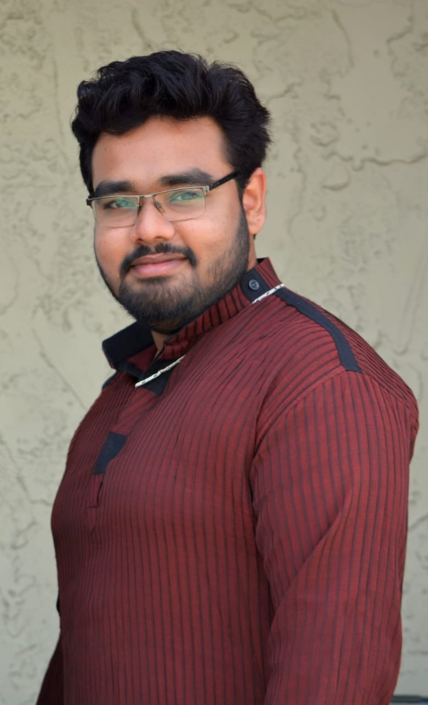

|  |
Arghadeep MitraPh.D. studentElectrical Engineering and Computer Science Scalable Data Science Lab University of Missouri, Columbia 201 Naka Hall, Columbia, MO 65211 Email: amtqt[at]missouri[dot]edu Social: [LinkedIn][Facebook] |
I am an incoming PhD student at University of Missouri, Columbia in the department of Electrical Engineering and Computer Science. I will be persuing my research under the guidance of Dr. Praveen Rao in the Scalable Data Science (SDS) lab. The research focus of this lab is to develop scalable algorithms, techniques, and systems for gaining insights from massive datasets in domains such as ecommerce, social media, healthcare, and defense applications. This demands new innovations in data and knowledge management, information retrieval, and machine learning. The lab has expertise in big data and scalable/cluster computing technologies. It also focuses on applications of machine learning and deep learning techniques to solve challenging problems in cybersecurity (e.g., on social media), healthcare (e.g., digital pathology, precision health), and sustainable design.
Software Developer / Graduate Research Assistant
California State University, San Marcos, CA
10/2019 – 12/2020
Partner with research team to develop software supporting waste management
research. Communicate with project stakeholders to gather requirements, conceive
appropriate solution, and translate into actionable development scope.
Technical Scope: Python, TensorFlow, Faster R-CNN, OpenCV, LabelImg.
Developed software to reduce human labor while separating recyclables,
detecting recyclable materials in trash bins and searching for contamination
by non-recyclable materials.
Leveraged Convolutional Neural Network and implemented machine
learning algorithms utilizing visual images and photo recognition to design
and build waste classification system.
Data Science and Informatics Intern
Corteva Agriscience (formerly DowDuPont), Hyderabad, India
6/2019 – 8/2019
Completed design and development of application to assist associates and
customers with training and utilization of machine learning algorithms. Wrote clean
code and executed effective testing and debugging. Oversaw project planning,
prioritized workflows, and produced results that met business needs.
Technical Scope: Python, Flask, TensorFlow, HTML, JavaScript
Created Python web application on Supervised Machine Learning Pipelines
with TensorFlow backend.
Integrated enabling technology, empowering user to search algorithms on
web server using specific data values
Master of Science in Computer Science, 2020
California State University, San Marcos, CA
GPA: 3.51/ 4
Bachelor of Technology in Computer Science and Engineering, 2018
Techno India University, West Bengal, India
CGPA: 8.04/ 10
2020
Tittle: Detection of Waste Materials Using Deep Learning and Image Processing
Authors: Arghadeep Mitra, Yanyan Li, Ahmad R. Hadaegh
Publisher: MDPI AI
Status: Under Review